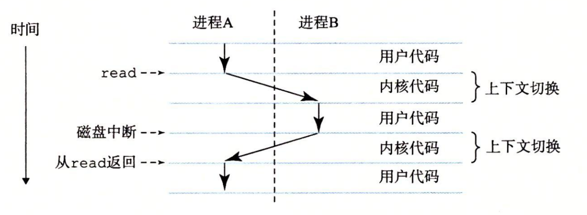

深入理解计算机系统
[toc]
计算机系统漫游
从程序员的角度学习计算机系统是如何工作的。
源程序
hello 程序的源程序是一个比特序列

系统组成
图1-3 一个典型系统的硬件组成CPU：中央处理单元；ALU：算术/逻辑单元；PC：程序计数器；USB：通用串行总线
高速缓存
操作系统的抽象表示
操作系统有两个基本功能∶（1）防止硬件被失控的应用程序滥用；（2）向应用程序提供简单一致的机制来控制复杂而又通常大不相同的低级硬件设备。操作系统通过几个基本的抽象概念（进程、虚拟内存和文件）来实现这两个功能。如图 1-11 所示，文件是对 I/O 设备的抽象表示，虚拟内存是对主存和磁盘 I/O 设备的抽象表示，进程则是对处理器、主存和 I/O 设备的抽象表示。我们将依次讨论每种抽象表示。
进程
进程是操作系统对一个正在运行程序的一种抽象。
进程是操作系统对一个正在运行的程序的一种抽象。在一个系统上可以同时运行多个进程，而每个进程都好像在独占地使用硬件。而并发运行，则是说一个进程的指令和另一个进程的指令是交错执行的。在大多数系统中，需要运行的进程数是多于可以运行它们的 CPU 个数的。传统系统在一个时刻只能执行一个程序，而先进的多核处理器同时能够执行多个程序。无论是在单核还是多核系统中，一个 CPU 看上去都像是在并发地执行多个进程，这是通过处理器在进程间切换来实现的。操作系统实现这种交错执行的机制称为上下文切换。
从一个进程到另一个进程的转换是由操作系统内核（kernel）管理的。内核是操作系统代码常驻主存的部分。当应用程序需要操作系统的某些操作时，比如读写文件，它就执行一条特殊的系统调用（system call）指令，将控制权传递给内核。然后内核执行被请求的操作并返回应用程序。注意，内核不是一个独立的进程。相反，它是系统管理全部进程所用代码和数据结构的集合。

线程
尽管通常我们认为一个进程只有单一的控制流，但是在现代系统中，一个进程实际上可以由多个称为线程的执行单元组成，每个线程都运行在进程的上下文中，并共享同样的代码和全局数据。由于网络服务器中对并行处理的需求，线程成为越来越重要的编程模型，因为多线程之间比多进程之间更容易共享数据，也因为线程一般来说都比进程更高效。
虚拟内存
虚拟内存是一个抽象概念，它为每个进程提供了一个假象，即每个进程都在独占地使用主存。每个进程看到的内存都是一致的，称为虚拟地址空间。图 1-13 所示的是 Linux 进程的虚拟地址空间（其他 Unix 系统的设计也与此类似）。在 Linux 中，地址空间最上面的区域是保留给操作系统中的代码和数据的，这对所有进程来说都是一样。地址空间的底部区域存放用户进程定义的代码和数据。请注意，图中的地址是从下往上增大的。
文件
文件就是文字序列，仅此而已，每个I/O设备都可以看成是一个文件。系统中的所有输入输出都是通过一组称为 Unix I/O 的系统调用读写文件来实现的。
网络通信
系统漫游至此，我们一直是把系统视为一个孤立的硬件和软件的集合体。实际上，现代系统经常通过网络和其他系统连接到一起。从一个单独的系统来看，网络可视为一个 I/O 设备，如图 1-14 所示。当系统从主存复制一串字节到网络适配器时，数据流经过网络到达另一台机器，而不是比如说到达本地磁盘驱动器。相似地，系统可以读取从其他机器发送来的数据，并把数据复制到自己的主存。
Amdahl 定律
相对性能

并发和并行
并发（concurrency）是一个通用的概念，指一个同时具有多个活动的系统；而术语并行（parallelism）指的是用并发来使一个系统运行得更快。并行可以在计算机系统的多个抽象层次上运用。在此，我们按照系统层次结构中由高到低的顺序重点强调三个层次。
计算机抽象
计算机系统中的一个重大主题就是提供不同层次的抽象表示，来隐藏实际实现的复杂性
在学习操作系统时，我们介绍了三个抽象：文件是对 I/O 设备的抽象，虚拟内存是对程序存储器的抽象，而进程是对一个正在运行的程序的抽象。我们再增加一个新的抽象∶ 虚拟机，它提供对整个计算机的抽象，包括操作系统、处理器和程序。
小结
计算机系统是由硬件和系统软件组成的，它们共同协作以运行应用程序。计算机内部的信息被表示为一组组的位，它们依据上下文有不同的解释方式。程序被其他程序翻译成不同的形式，开始时是 ASCII 文本，然后被编译器和链接器翻译成二进制可执行文件。
处理器读取并解释存放在主存里的二进制指令。因为计算机花费了大量的时间在内存、I/O 设备和 CPU 寄存器之间复制数据，所以将系统中的存储设备划分成层次结构——CPU 寄存器在顶部，接着是多层的硬件高速缓存存储器、DRAM 主存和磁盘存储器。在层次模型中，位于更高层的存储设备比低层的存储设备要更快，单位比特造价也更高。层次结构中较高层次的存储设备可以作为较低层次设备的高速缓存。通过理解和运用这种存储层次结构的知识，程序员可以优化C程序的性能。
操作系统内核是应用程序和硬件之间的媒介。它提供三个基本的抽象∶1）文件是对 I/O 设备的抽象；2）虚拟内存是对主存和磁盘的抽象；3）进程是处理器、主存和 I/O 设备的抽象。
最后，网络提供了计算机系统之间通信的手段。从特殊系统的角度来看，网络就是一种 I/O 设备。
信息的表示和处理
1. 信息存储
bit
孤立地讲，单个的位不是非常有用。然而，当把位组合在一起，再加上某种解释 （interpretation），即赋予不同的可能位模式以含意，我们就能够表示任何有限集合的元素。比如，使用一个二进制数字系统，我们能够用位组来编码非负数。通过使用标准的字符码，我们能够对文档中的字母和符号进行编码。在本章中，我们将讨论这两种编码，以及负数表示和实数近似值的编码。
虚拟地址空间
大多数计算机使用 8 位的块，或者字节（byte），作为最小的可寻址的内存单位，而不是访问内存中单独的位。机器级程序将内存视为一个非常大的字节数组，称为虚拟内存（virtual memory）。内存的每个字节都由一个唯一的数字来标识，称为它的地址（address），所有可能地址的集合就称为虚拟地址空间（virtual address space）。顾名思义，这个虚拟地址空间只是一个展现给机器级程序的概念性映像。实际的实现（见第 9 章）是将动态随机访问存储器（DRAM）、闪存、磁盘存储器、特殊硬件和操作系统软件结合起来，为程序提供一个看上去统一的字节数组。
指针
真正理解指针需要查看它们在机器级上的表示以及实现。